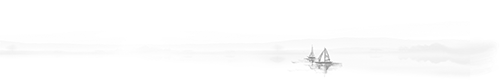
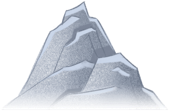
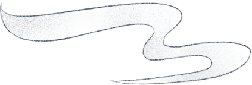
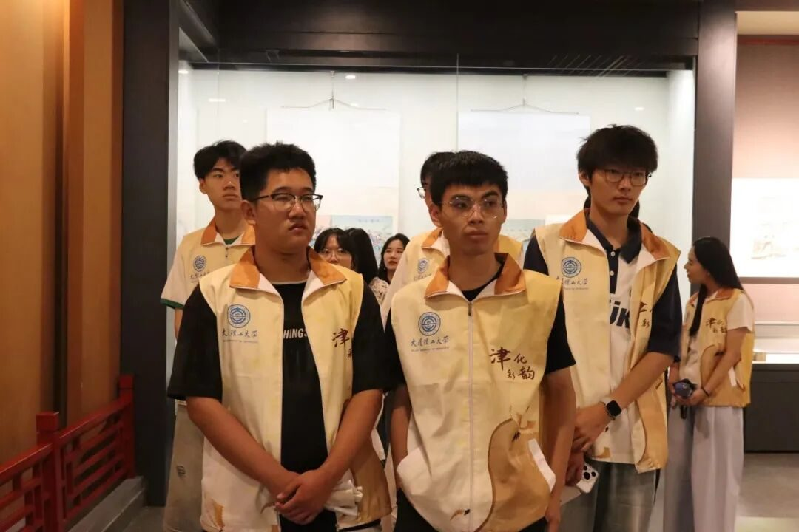
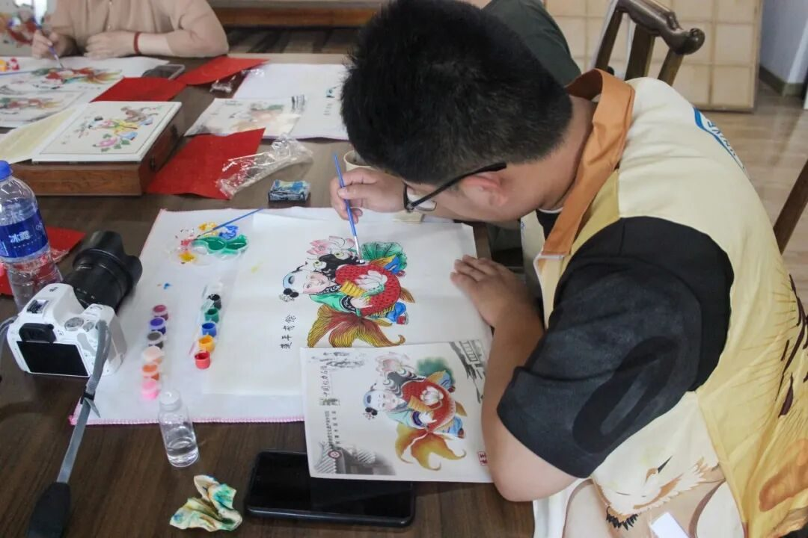

【行者无疆·津彩化韵】个人实践感悟——肖盛强

行者无疆
津彩化韵

在五天的实践中
我沉浸于津门非遗的深厚底蕴
经历了一场从技艺认知
到文化认同的心灵震撼


从博物馆的厚重展陈到乡间工作室的鲜活创作，从年画的斑斓色彩到泥塑的质朴形态，从风筝的凌云之志到葫芦上的烙刻纹样，我们怀揣着对传统文化的敬意，开启了这场深度触摸天津非物质文化遗产的实践序幕。

在实践中，我们不仅是旁观者，更是参与者与对话者。我们亲身体验了拓印年画与揉捏陶土，感受着刀锋在梨木上刻画的力度与泥土在指尖流动的温度。与传承人们的深度交流是此行核心：倾听“风筝魏”第四代传人魏国秋先生讲述薄绢竹骨间的家族坚守与飞翔哲学；每一天的奔波，每一次的动手体验与面对面访谈，都让我们更深切地理解了“匠心”二字的千钧之重和“传承”路上的机遇与艰辛。

这次天津非遗实践之旅，其重要性远非一次简单的文化采风。它让我们深刻认识到，非物质文化遗产是民族精神的DNA，是文化自信的基石作为实践者，我们深感责任在肩。未来，我们不仅要通过影像、文字和新媒体平台记录传播这些珍贵的技艺与故事，更要思考如何运用所学知识、创意和科技力量，助力非遗的创造性转化与创新性发展，让这些“指尖上的智慧”真正融入时代脉搏，持续闪耀在中华文明的星河之中。
-THE END-
来源 | 行者无疆实践团
图片 | 行者无疆实践团
文字 | 肖盛强
编辑 | 姜骅洲
审核 | 张瑶琪 李凌志 杩健辉
责编 | 邹靓靓 周 亮